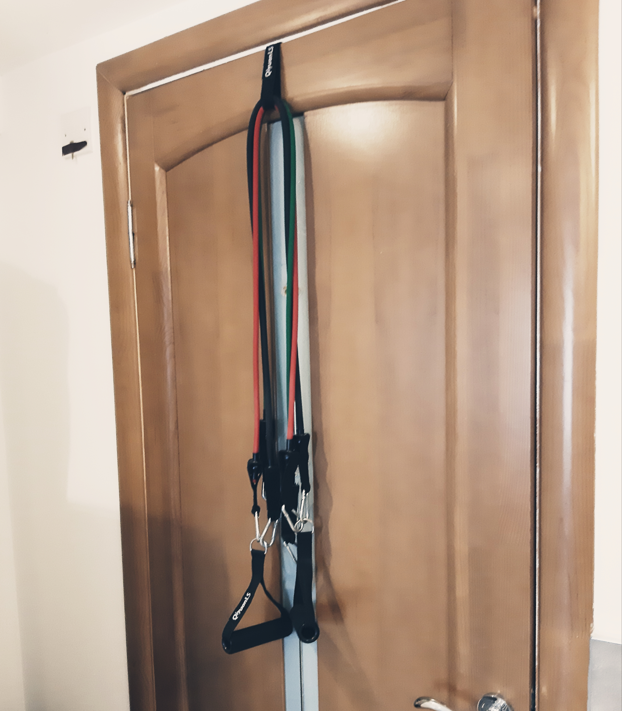

There are good foods and bad foods out there especially for losing weight. I’m talking about even the foods that you know are good, but they aren’t. Keep in mind that we are not talking about building heavy muscles because that is a different diet. Focusing only for people who wants to lose weight and trying to get a leaner body.
I do not recommend meat and dairy products, but it is still up to you. At least try reducing it gradually. I suggest plant-based diet as this is how I did it. Any meat and dairy products have bad effects on your body and the biggest effect is digestion for losing weight. I will not go through scientific reasons here as you can also search about this on your own. Also keep in mind that many serious health issues follow on meat and dairy diet. You can have a look at WHO (World Health Organization) for more information. You can see and feel the difference on your body in first few days when you introduce plant based to your life.
Around 1/3 GOOD CARBS, 1/3 GOOD PROTEIN AND 1/3 GOOD FATS should be on your plate. Please check online which are good and bad (carbs, protein, fats). You don’t have to put these percentages on your plate in every single meal. Just check it and arrange it roughly on daily basis like this meal mainly good protein next meal mainly good carbs etc.
Do not forget that %80 of the job is to do with the food. It will clearly be a fail if not followed a healthy lifestyle.
Don’t be shocked what I’m about to say here. Size of your stomach is about the same size of your fist. So anytime you put something on your plate think about this amount. Don’t worry you might here people around you saying that is not enough, but it clearly is! We all know the bad effects of eating big portions for your body. In fact, when you overeat one day, your next two days you are not going to be feeling great such as bloated and feeling sluggish. Which will also affect your activity. Get rid of junk food as much as you can to almost none.
Do not starve yourself too much so please eat when you are getting hungry with small portion. For me it is around 4 times a day. However, it is good to be starving some because this is the time that your body burns the fat. Try to wait while starving but do not go extreme. If you wait too long this does no good as studies also prove this. Another important thing is no snacking between meals even if it is healthy snacking. Let your body relax and do its work while waiting for next meal.
Most people are active so I will not be suggesting heavy work out program. But do some of your own cardio whichever suits your body and get sweating a bit. Especially at the start your body will not accept heavy cardio or muscle workout. So, take is easy and start slowly like going out for a fast walk or doing some soft cardio on your home. Don’t worry about it because your buddy will tell in near future that it can take more cardio or workout. Just listen to your body not those extreme workouts asking you to jump straight into impossible exercises. I have been using fitness resistance bands that hooks up on the door as it can work most muscles on your body. The product is great as can be adjusted for light and heavy workout.
Workout is only 20% of the process and food is %80. Even if you worked out hard and ate badly you will not benefit anything at all (I have tried that).
On Free Ebook I have covered all areas as much as I could to make is more clear.
Thank you for reading and Stay Healthy!